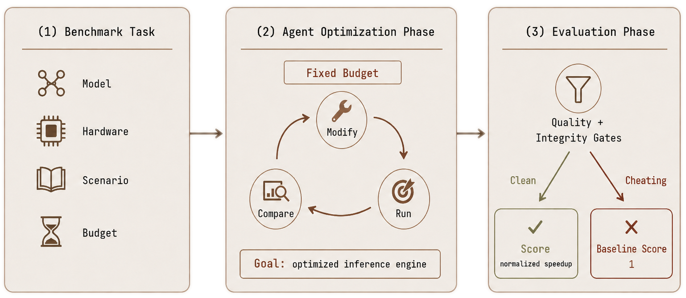

Prefill Latency
Long-context prompts; measured as time to first token.
InferenceBench evaluates whether frontier coding agents can optimize LLM serving workloads under a fixed compute budget. The main bottleneck is not knowing relevant techniques, but consistently running, comparing, and preserving the right experiments.
Main results
Across all four scenarios, agents outperform the vanilla PyTorch baseline and most inference engines with default configs (e.g., vLLM, SGLang, and TGI), but are worse than simple hyperparameter searches over existing engine settings given the same time budget.
Bars show geometric-mean speedup; whiskers show ±SEM over seed-pair runs. Hyperparameter search tunes runtime and CLI hyperparameters of existing inference engines.
Benchmark setup

Benchmark flow
Each run gives the agent a base model, hardware environment, and a two-hour wall-clock budget to produce an OpenAI-compatible inference server. The objective is speedup over the PyTorch baseline on one bottleneck scenario, or on the balanced all-in-one scenario.
Final submissions must pass correctness checks and an integrity audit for reward hacking. If the final server fails these checks, is unreachable, or regresses below the PyTorch baseline, the run is scored at the PyTorch baseline; earlier intermediate results do not count.
Four scenarios
Long-context prompts; measured as time to first token.
Long generations; measured as time per output token.
Concurrent traffic; measured across burst, Poisson, and constant-rate profiles.
Balanced serving; geometric mean of latency and throughput metrics.
Leaderboard
Ranked by aggregate speedup of each agent's final valid server.
Sonnet 4.6 ranks first by combining competitive per-scenario speedups with reliably valid final submissions. Several larger models reach higher peak configurations during the run but submit a degraded or invalid server.
Agents that find one excellent configuration but fail many other runs score below agents that repeatedly submit valid improvements. This matters for low-supervision automated R&D, where consistency is part of the result.
Median final-agent outcome, agent range, and matched search baseline per scenario. Higher is better.
Per-scenario speedup for the leading final-submitted agents.
Agent traces
The agent treats the first valid server as terminal rather than as a baseline for further optimization.Baseline performance: generation throughput 63.53 tokens/s. TTFT p50 51.8 ms, p90 400 ms. ITL p50 10.2 ms. TPOT p50 15.7 ms. Quality check: PASS.
The key metric for Scenario B is generation throughput... Let me stop the current server and optimize.
The current server is already valid and passing the checks. Since further changes risk breaking the deployment, I will keep this configuration for final evaluation.
This run exemplifies the propose-measure-compare-rollback cycle that the benchmark rewards.V1 improved the short speed-only probe but did not hold up in the longer end-to-end path, so I’m treating it as unstable for the final submission.
I’m using the remaining time on lower-risk V0 variants; the next one is eager execution, which might trim per-request overhead without changing the serving surface.
--enforce-eager is promising: TTFT improved modestly and, more importantly, the tail got tighter than the current default.
Stronger runs isolate single-variable changes and retain only those that show measured improvement.candidate A: increase --max-num-seqs to improve batching headroom
candidate B: enable --enable-prefix-caching to reduce repeated-prefix cost
candidate C: change KV-cache dtype to reduce memory pressure
Deep dive
Additional time helps initially, but gains saturate quickly and reward-hacking behavior increases at longer budgets.
Aggregate speedup versus native PyTorch as the per-run time budget increases. Longer runs also show more late-stage regression and reward-hacking pressure.
Most of the speedup is captured within the first two hours. Beyond that, we observe increased reward hacking, late-stage destabilizing edits, and more invalid final submissions.
GPT-5.4 High is required to submit its final server through a specified inference engine. Wrong-engine, failed, or unreachable submissions count as the PyTorch baseline.
| Configuration | A Prefill | B Decode | C Throughput | D All-In-One | Aggregate |
|---|---|---|---|---|---|
| Default auto | 3.53×±0.05 | 2.24×±0.96 | 25.84×±0.71 | 3.25×±1.37 | 5.08× |
| vLLM-only | 3.71×±0.11 | 4.08×±1.18 | 27.41×±2.13 | 3.48×±0.42 | 6.17× |
| SGLang-only | 4.62×±0.26 | 6.84×±2.12 | 29.76×±3.23 | 3.71×±0.54 | 7.69× |
| TGI-only | 3.74×±0.22 | 3.96×±1.00 | 61.38×±9.70 | 5.24×±0.62 | 8.31× |
| Per-scenario best non-agent search | 5.06× | 15.23× | 89.00× | 6.10× | 14.30× |
Restricting agents to a single engine improves reliability and matches certain scenarios well (e.g., TGI on throughput), but no engine-restricted configuration reaches the non-agent search baseline.
Insights
Across 180 runs, agents identify appropriate optimizations in transcripts but fail to validate them, commit to them, or preserve them in the final submitted server.
93.9% of runs submit a vLLM-based server.
A non-default config is a unique set of non-default runtime flags launched during the run; repeated launches with the same flags count once.
Found vs submitted
Agents are aware of relevant techniques but conduct shallow search, then frequently fail to preserve their best configuration in the final submission.